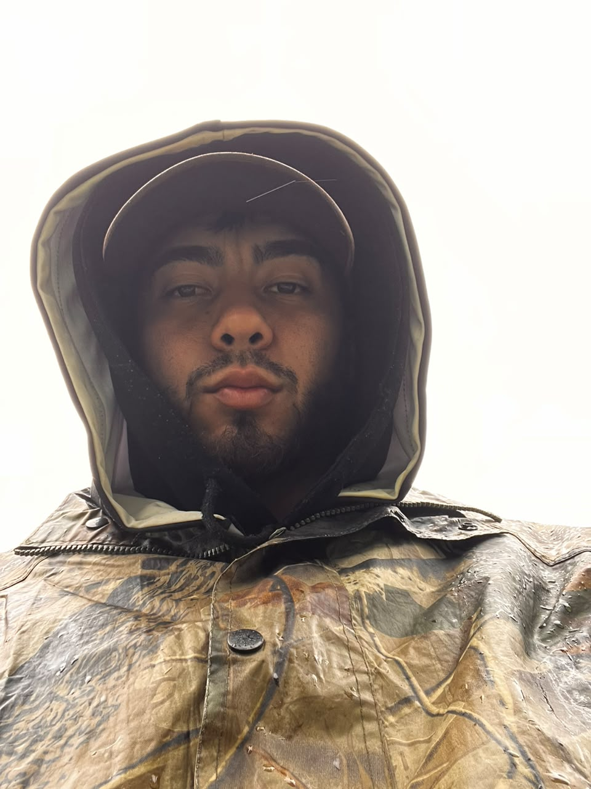
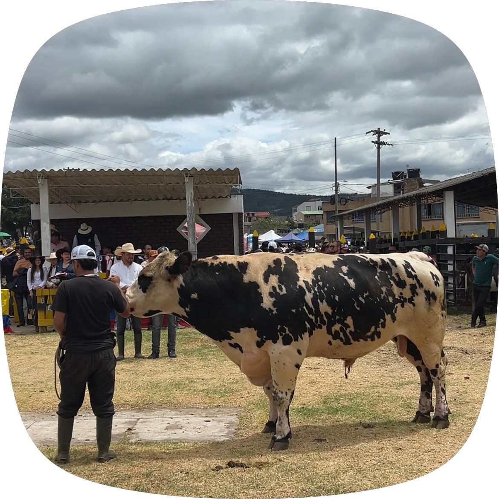
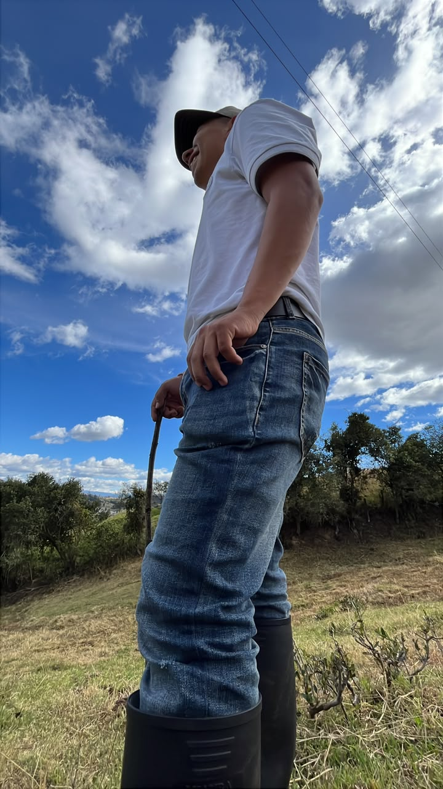
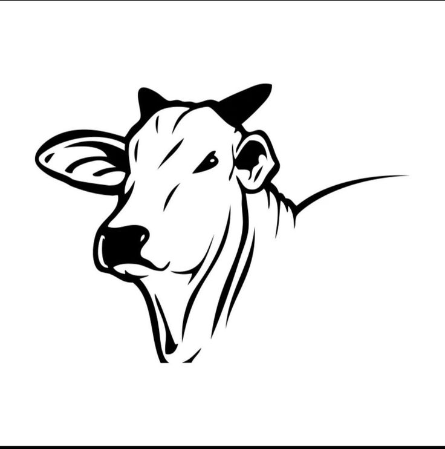
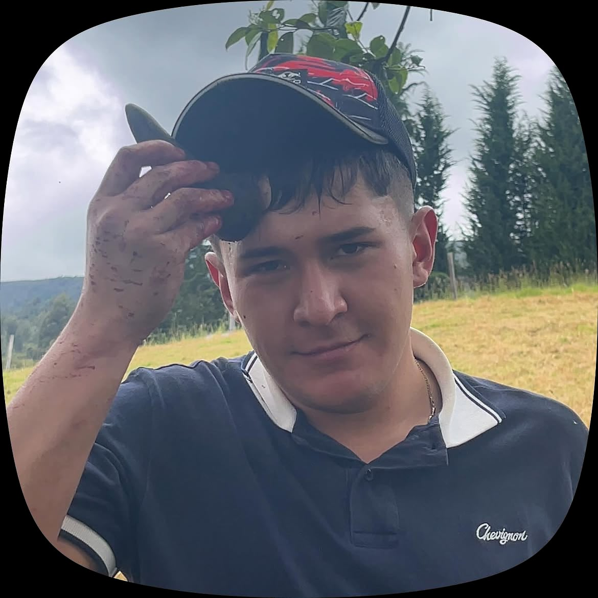
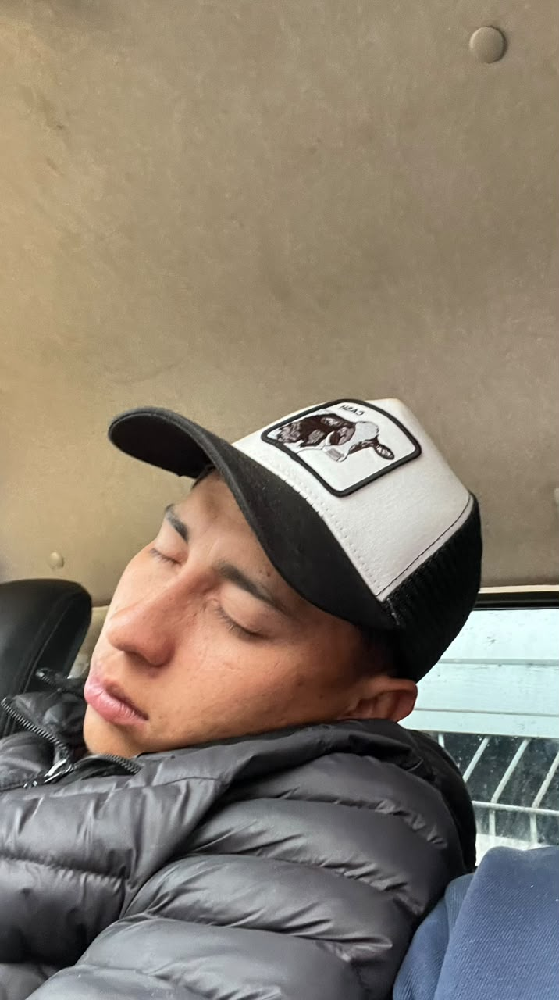

Marcos Garcia
Ganadero de Boyacá
La ganadería es una tradición familiar que nos ha permitido salir adelante. Con una buena alimentación y cuidado del ganado podemos obtener mejores resultados.
TERRABOVINOS
Estas son las opiniones de nuestros Ganaderos.

Ganadero de Boyacá
La ganadería es una tradición familiar que nos ha permitido salir adelante. Con una buena alimentación y cuidado del ganado podemos obtener mejores resultados.

Productora de leche
El cuidado diario de las vacas es fundamental para mantener una buena producción de leche y garantizar la calidad del producto.

Criador de bovinos
Elegir una raza adecuada para el clima y el terreno ayuda a mejorar el rendimiento de la finca y facilita el manejo del ganado.

Administradora de finca
Llevar registros de vacunación, alimentación y peso nos ayuda a conocer mejor el estado de los animales y a organizar el trabajo.

Productor de carne
La buena alimentación, el acceso al agua y la atención veterinaria son importantes para mantener animales sanos.

Emprendedora rural
El campo colombiano tiene muchas oportunid ades. Con dedicación, aprendizaje y responsabilidad podemos fortalecer nuestros proyectos ganaderos.